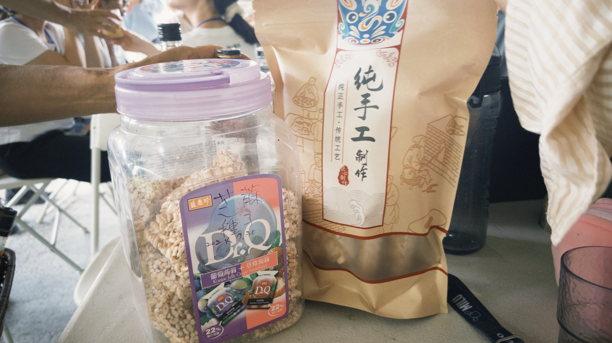
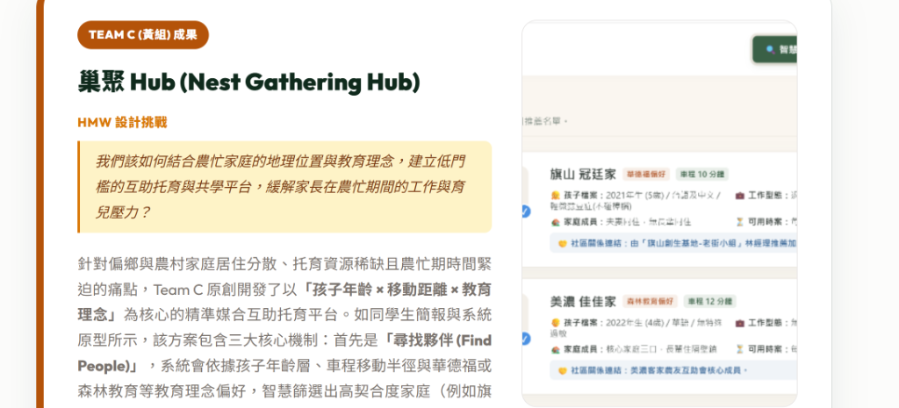

經歷了 Discover (發散探索) 的深度訪查、Define (收斂定義) 的痛點聚焦，以及 Develop (發想開發) 的創意撞擊後，首屆「泰拉學校—地之校」的跨國共創團隊迎來了最後的終點站——Deliver (遞交與落地驗證)。這不是一場只留在紙面上的簡報練習，而是要忠實地把各小組的原創點子，打造成能夠在真實場域運作 My MVP 原型。當我們的解決方案與真實的土地、老農、新青農以及外部體驗者面對面時，學生的成果不僅解答了城鄉共創的關鍵挑戰，更以超乎想像的精緻度與原創力，為地方帶來驚艷的視野。
二、 地之校實踐現場：與宜蘭風土的真實交織
本篇成果的誕生地橫跨宜蘭員山阿聰自然田、南澳水月農莊以及礁溪佛光大學。以下是學生在田野調研、跨國對話以及成果發表時的代表性實地影像，記錄了最真實的實踐溫度：




三、 四大原創成果發布：兼具美感與實用價值的原創提案
早稻田與清華大學跨國小組針對地之校所提出的解決方案，皆以驚人的執行力轉化為實作成果。為了呈現最真實、精緻的設計細節，我們已將各小組原型與簡報中最具代表性的圖檔直接嵌入在下方成果卡片中，讀者可直接閱覽或點擊大圖檢視：
田路 Toolkit (From Crop to Brand)
我們該如何為小農設計一套低門檻的品牌工具包，協助他們系統化盤點作物資源、對接顧客地圖，並快速驗證品牌價值的最簡可行產品（MVP）？
針對阿聰自然田等小農在加工轉型時的財務與家庭風險，Team A 原創開發了這套精緻的數位品牌輔助診斷工具。網頁包含 7 大核心步驟，從作物的產季與格外品（外觀不佳但安全可食）盤點開始，引導小農進行市場觀察、加工發散，並借鏡國內外地方創生案例，最终設計出專屬故事與市場驗證方案，還能自動輸出初版提案，極具商業推廣與教育引導價值。
- 作物與格外品盤點：幫助小農找出原先被浪費的額外剩餘資源。
- 7步驟漸進引導：內嵌參考案例與重點指引，極易上手。
- 初版提案綜整：在網頁尾端自動生成可複製與輸出的品牌企劃書。

農村療癒護照 Rural Healing Passport
我們該如何整合零散的入口管道，並透過分級體驗旅程與集點挑戰，延續旅人對農村日常的期待感與體驗深度？
體驗活動如果做成一次性觀光，昂貴的行銷成本就無法轉換為地方的長期支持者。Team B 原創設計的「農村療癒護照」是一套完整的體驗分級與關係維繫系統。透過將農事體驗分為「短期遊客」、「中長期深度體驗」與「長期打工沉浸」三種深度，並搭配療癒護照卡的實體集點印章機制，成功將都市人的「一次性旅遊」轉化為「地方生活型態的延續」，讓人在回城後仍保有對土地的強烈連結。
- 分級體驗旅程：降低農事真實勞動的體力與氣候抗性門檻。
- 療癒護照集點：把「方便取得」的農村自然素材轉譯為感知集點卡。
- 體驗旅程接力：串接社群、市集與打工換宿，維繫長效認同。

巢聚 Hub (Nest Gathering Hub)
我們該如何結合農忙家庭的地理位置與教育理念，建立低門檻的互助托育與共學平台，緩解家長在農忙期間的工作與育兒壓力？
針對偏鄉與農村家庭居住分散、托育資源稀缺且農忙期時間緊迫的痛點，Team C 原創開發了以「孩子年齡 × 移動距離 × 教育理念」為核心的精準媒合互助托育平台。如同學生簡報與系統原型所示，該方案包含三大核心機制：首先是「尋找夥伴 (Find People)」，系統會依據孩子年齡層、車程移動半徑與華德福或森林教育等教育理念偏好，智慧篩選出高契合度家庭（例如旗山冠廷家契合度 98%、美濃佳佳家契合度 92%）；其次是「建立群組 (Form Groups)」，以 3–5 個相鄰且理念契合的家庭為一互助單元，組成共學或農忙互助團；最後是「協力調配 (Coordinate)」，透過輪值排班日程表與互助出力點數（Time Bank）機制，建立可持續的去金流鄰里托育網絡，並設有社區實名推薦人與安全退場公約以確保信任與隱私。
- 精準篩選夥伴 (Find People)：智慧篩選孩子年齡、車程半徑與華德福/森林教育等理念相符之家庭。
- 熟人圈守門公約 (Form Groups)：家庭成員必須共同參與線下共學 3 次破冰後，系統才解鎖排班表，建立實體信任。
- 去金流協力排班 (Coordinate)：以出力點數（Time Bank）代替金錢交易，實現鄰里互助，並提供安全無痛退出機制。

半農半X 青年入村生活指南 (Half-Farm Half-X Rural Guide)
我們該如何將租地、收入策略與地方社交潛規則，轉譯為結構化的三階段入村指南，降低青年移居農村時的社會融入門檻？
都市青年移居農村最容易卡關的往往不是種植技術，而是人際地緣網絡與地方潛規則。Team D 製作的「青年入村生活指南」網站，結構化地將入村生活分為「新手準備」、「入村轉換」、「在地扎根」三階段。並在網頁中將複雜的土地租地歷史創傷防衛（如堅持口頭約定）、生計兼職、伴侶關係與地方社交摩擦等隱形門檻轉譯為可互動的「防撞問題庫」，直接串接對應的資源連結與真實案例。
- 三語定位地圖 (中/英/日)：利用位置、認同與生活比例釐清當前定位。
- 隱形防撞問題庫：將租地、收入、伴侶、社群支持等摩擦點透明化。
- 直覺式卡片操作：每張問題卡均直接連結對應案例，避免純文字閱讀負擔。

四、 落地驗證與外部評審反饋
學生的原創提案在發表會上，直接面對了包括宜蘭在地青農代表、手作職人、生態科學家、立德領導計畫指導老師以及 1221 未來教育發展協會評審的實地檢視。外部關係人對於四組原型的實用性給予了高度的驚艷與肯定：
「這不是冷冰冰的理論，而是直接針對我們在土地上碰到的日常磨難所設計的。」一位在地農友在發表會後表示。特別是黃組的『熟人守門機制』與紅組的『潛規則防撞指南』，將傳統社會學研究中的複雜人際張力，轉譯為新世代極易理解的數位流程，對外部社群和內部成員都帶來了極大的啟發。
至此，泰拉學校—地之校的 Design Thinking 探索手札全系列完結。從第一步的實地查訪，到最終的高感官數位與實體遞交成果，跨國團隊不僅忠實地記錄了風土，更用「設計」的力量，為城鄉共創與永續食農的複雜網絡，搭起了一座座充滿創造力與美感的橋樑。